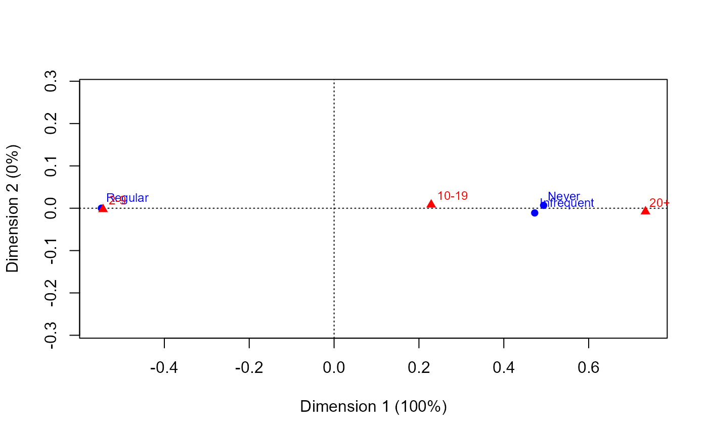

Hospital Visits Data
HospVisits.RdLength of stay in hospital for 132 schizophrenic patients, classified by visiting patterns, originally from Wing (1962).
Usage
data("HospVisits")Format
A 3 by 3 frequency table, with format: table [1:3, 1:3] 43 6 9 16 11 18 3 10 16 - attr(*, "dimnames")=List of 2 ..$ visit: chr [1:3] "Regular" "Infrequent" "Never" ..$ stay : chr [1:3] "2-9" "10-19" "20+"
Details
Both table variables can be considered ordinal.
The variable visit refers to visiting patterns recorded hospital.
The category labels are abbreviations of those given by Goodman (1983);
e.g., "Regular" is short for “received visitors regularly or patient went home”.
The variable stay refers to length of stay in hospital, in year groups.
Source
Goodman, L. A. (1983) The analysis of dependence in cross-classifications having ordered categories, using log-linear models for frequencies and log-linear models for odds. Biometrics, 39, 149-160.
References
Wing, J. K. (1962). Institutionalism in Mental Hospitals, British Journal of Social and Clinical Psychology, 1 (1), 38-51.
Examples
data(HospVisits)
mosaic(HospVisits, gp=shading_Friendly)
library(ca)
ca(HospVisits)
#>
#> Principal inertias (eigenvalues):
#> 1 2
#> Value 0.266408 4e-05
#> Percentage 99.98% 0.02%
#>
#>
#> Rows:
#> Regular Infrequent Never
#> Mass 0.469697 0.204545 0.325758
#> ChiDist 0.548379 0.472911 0.493871
#> Inertia 0.141247 0.045745 0.079455
#> Dim. 1 -1.062448 0.915982 0.956750
#> Dim. 2 0.015355 -1.746386 1.074428
#>
#>
#> Columns:
#> 2-9 10-19 20+
#> Mass 0.439394 0.340909 0.219697
#> ChiDist 0.544465 0.228999 0.733852
#> Inertia 0.130255 0.017878 0.118315
#> Dim. 1 -1.054853 0.443377 1.421707
#> Dim. 2 -0.403915 1.317858 -1.237123
# surprisingly 1D !
plot(ca(HospVisits))
